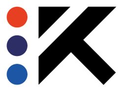

Ervaren vakmensen
Jarenlange ervaring en een team van ervaren installateurs en adviseurs vormen de basis van ons werk.
Ontdek wie we zijn, wat ons drijft en waar Koller & Tabor voor staat.
Met een team van meer dan 20 medewerkers staan we iedere dag voor onze klanten klaar. Samen bouwen we aan duurzame relaties en installaties.

Bij Koller & Tabor draait het om vakkennis, betrokkenheid en oplossingen die aansluiten bij de wensen van onze klanten.
Jarenlange ervaring en een team van ervaren installateurs en adviseurs vormen de basis van ons werk.
Met meer dan 20 medewerkers zetten we ons iedere dag in om onze klanten zo goed mogelijk van dienst te zijn.
We luisteren naar onze klanten, denken mee en blijven zoeken naar passende oplossingen.
We streven naar optimale en duurzame oplossingen en bouwen aan langdurige relaties met onze klanten.
Dit zijn de uitgangspunten die centraal staan bij alles wat we doen.
Jarenlange ervaring maakt ons de ideale partner voor al uw projecten. Ons team van ervaren installateurs en adviseurs levert betrokken vakwerk. Daar kunt u op rekenen.
Wij zetten alles op alles om u zo goed mogelijk van dienst te zijn. Samen blijven we verbeteren en streven we naar optimale en duurzame oplossingen voor onze klanten.
Wij werken met hoogwaardige materialen en gereedschappen om u het beste werk te kunnen leveren. Onze partners zijn specialisten op hun vakgebied.
Wij begrijpen als geen ander dat u snel geholpen wilt worden, zeker bij noodgevallen. Daarom bieden wij onze vaste klanten ook een storingsservice.
Neem contact met ons op. We helpen u graag verder.